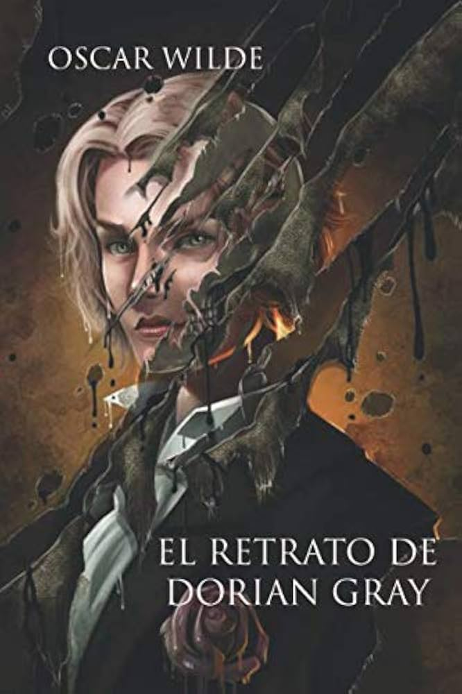

El retrato de Dorian Gray
La historia comienza en el estudio del pintor Basil Hallward, quien, fascinado por la belleza juvenil y pura de un joven llamado Dorian Gray, decide pintar su retrato. Allí, Dorian conoce a Lord Henry Wotton, un aristócrata ingenioso y amoral que lo convence de que lo único que vale la pena en la vida es la belleza y la satisfacción de los sentidos.
Atemorizado por la idea de envejecer, Dorian expresa un deseo desesperado: que sea el cuadro el que envejezca y muestre las marcas del tiempo y del pecado, mientras él permanece eternamente joven. Para su sorpresa, el deseo se cumple. Mientras Dorian se sumerge en una vida de vicio, crueldad y hedonismo, su rostro físico se mantiene angelical, pero el retrato oculto en su ático se transforma en una figura monstruosa y deforme que refleja la podredumbre de su alma.